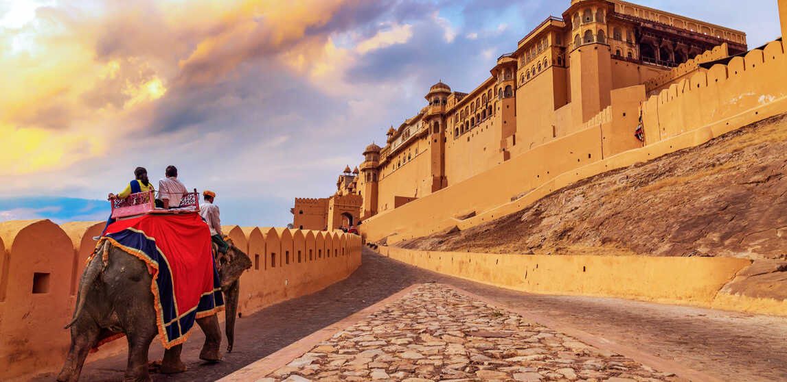
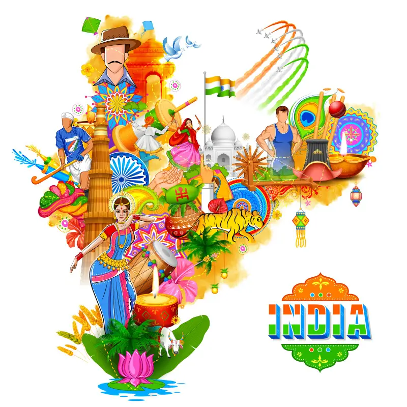
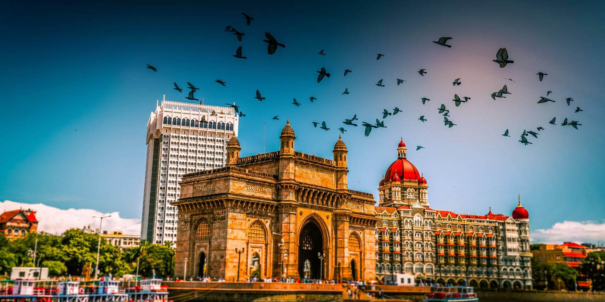
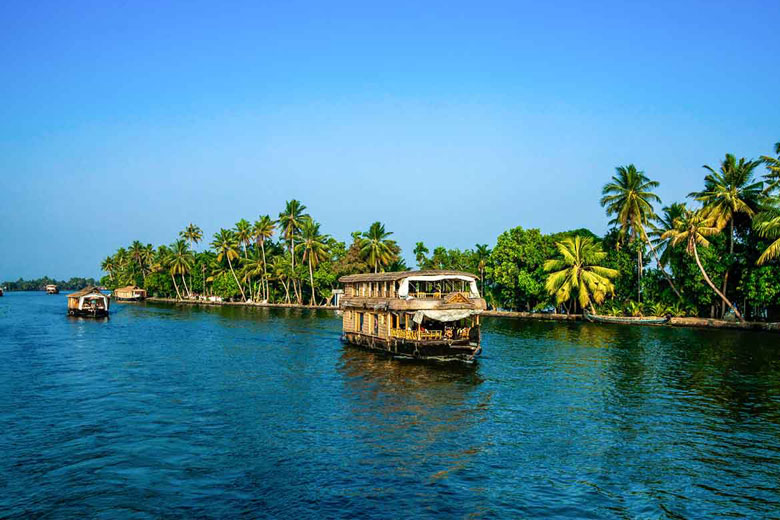

The Incredible India project highlights the rich culture, traditions, and diversity of India. It showcases India’s festivals, food, dance, and heritage that reflect unity in diversity. The project also focuses on India’s natural beauty and famous tourist attractions. Through this website, users can learn about India’s cultural values and tourism importance in a simple and attractive way.
 |
India is a vast and diverse country located in South Asia.
It has a rich history that dates back thousands of years and is home to one of the world’s oldest civilizations.
India is known for its unity in diversity, where people of many cultures, languages, and religions live together peacefully.
The country celebrates numerous colorful festivals throughout the year, reflecting joy, tradition, and togetherness.
Indian food, music, and dance are famous all over the world for their variety and uniqueness.
India is the world’s largest democracy and follows democratic values and the rule of law.
The country has diverse landscapes including mountains, rivers, deserts, forests, and beaches.
India has made great progress in fields like science, education, technology, and space research.
Family values, respect for elders, and hospitality are important parts of Indian society.
Overall, India is a land of rich culture, strong traditions, and a bright future.
| Currency:Indian rupee (Rs.) |
| Population:1.252 billion |
| Time Zone:UTC+05:30 |
| Area:3.287 million km2 |
| Capital:New Delhi |
| Official Language:Hindi, English |
| Capital's calling code:+91 |
 |
|
| Rajasthan | Gujarat |
 |
 |
| Maharashtra | Kerala |
This website provides information on the history, culture, festivals, tourist attractions, and travel details of selected Indian states.
It helps users explore the rich diversity and heritage of each region.